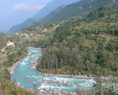

Welkom
 Al heel wat jaren doet tandarts Rob Watson vrijwilligerswerk binnen het Dentalcamp in Nepal, waarbij scholen in afgelegen bergdorpen bezocht worden voor tandheelkundige hulp aan kinderen. Wat Rob Watson in deze jaren opviel was de zeer slechte kwaliteit van het drinkwater op de scholen en in de bergdorpen.
Tijdens zijn bezoeken aan Nepal heeft Rob goede contacten kunnen opbouwen met de Rotary en Lionsclub in Nepal. Zijn bezoek eind vorig jaar november heeft geleid tot samenwerking om de aktiviteiten uit te breiden met het zuiveren van drinkwater.
Waterproject
De bedoeling van dit waterproject is scholen te voorzien van waterfilters voor schoon drinkwater. Inmiddels is er contact gelegd met IMT een Flevolands bedrijf in Zeewolde dat waterfilters produceert. Dit bedrijf heeft toegezegd deze aktie te willen ondersteunen.
Klik hier om meer te lezen over het water project.
Dentalcamp
Om de mondgezondheid van de bevolking te continueren worden er door ons tandartsen Nepalese mondhygiënisten begeleidt . Deze worden door het Dental Camp financieel ondersteund door middel van salaris en/of onkostenvergoeding.
Klik hier om meer te lezen over het dental camp.